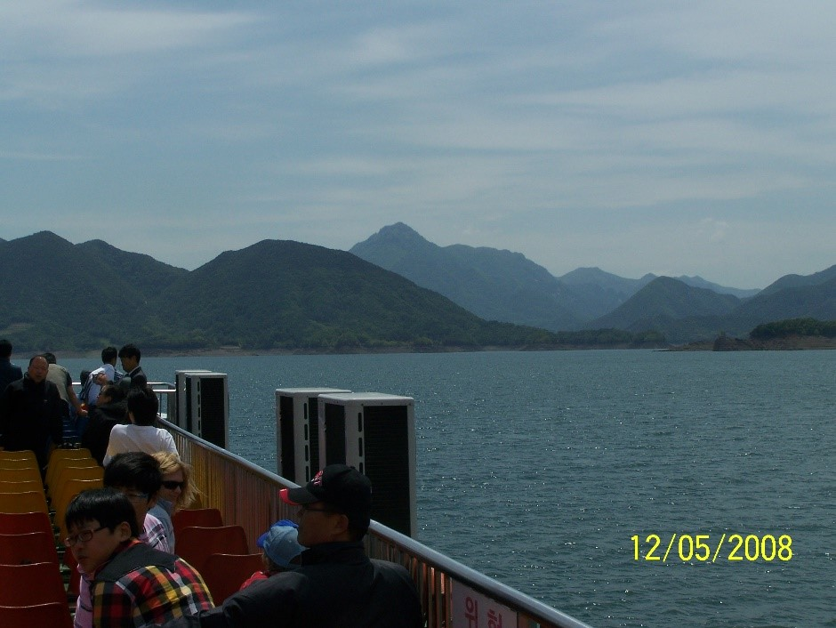
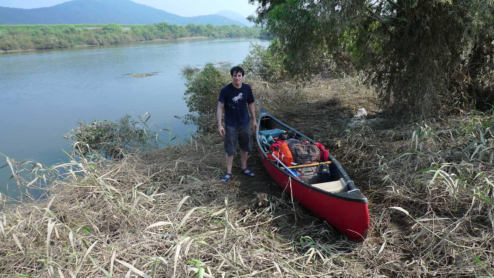
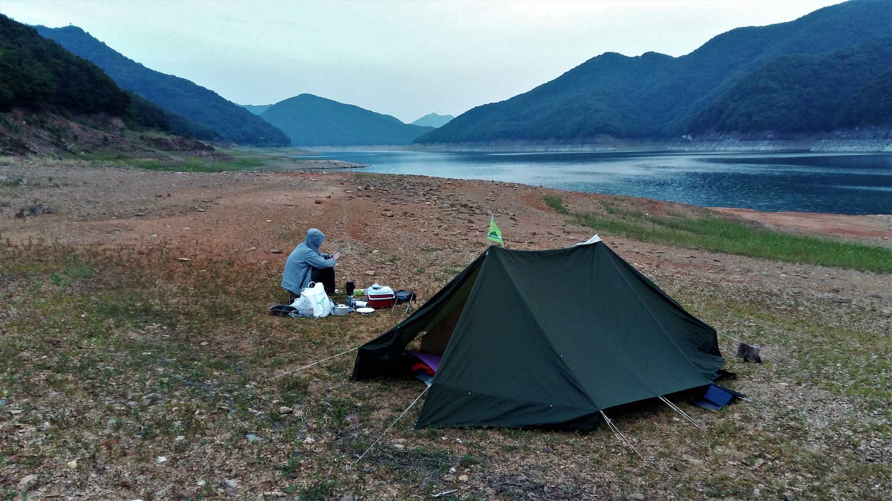

Previous experience
Prior to moving to Korea in 2002, I had a great deal of experience canoeing in the rivers and lakes of the eastern U.S.A. I
had always enjoyed canoeing on both rivers and lakes. For two summers during my youth I had been a camp counselor on Lake
George where I spent many weeks leading canoe and hiking trips in the Adirondack region of New York State. I have also
kayaked a number of the rivers of both Germany and Austria when I spent a summer exploring those European rivers in Klepper
Arius Fault Boats during the summer of 1958. I decided when we were preparing to move to Korea that I would not give up
canoeing. Therefore when we moved to Korea we brought our Old Town Tripper Model 172 Canoe
Old town Tripper Model 172 Canoe
This model is the workhorse of Wilderness tripping canoes. Designed from the keel line up to meet the exacting requirements
of backcountry expeditions, from its legendary durability to its expedition-tested padding efficiency and maneuverability.
The tripper 172 has exceptional stability and a cargo volume that can be only described as massive….. a true hauler. We
brought a Tripper 172 with us to Korea. It features polyethylene decks with grab handles; classic, standard – setting
design; black blow molded seats; ash carrying yoke and thwart and black vinyl gunwales. Made from the patented material
Royalex it comes in colors of green and red. Its length is 17 feet 2 inches or 5.2 meters with a width of 37 inches or 93.9
centimeters.
The Importance of Dams in Korea
After I had spent a few years getting adjusted to Korea, my wife asked me when I was going to use the canoe. This was my
impetus to plan a trip at the end of the university semester in June of 2008. I already knew that South Korea has four large
rivers, The Hangang (한강) that passes through Seoul, the Nakdonggang (낙동강) that starts in the northwest and passes through
Daegu (대구) and finally to Busan (부산), the GeumGang (금강) that is found in the Daejeon area and eventually flows to GunSan
(군산) on the West Coast and the YoungSanGang (영산강) that starts north of the city of GwangJu (광주) and goes south to the port
of Mokpo (목포) on the south coast. I also knew that Korea had many large lakes most of which were formed when dams were built
on many rivers during the time of President Park Chun Hee (박정희). These dams serve an important agricultural function. Over
eighty percent of the rain falls in the summer monsoon season. This means that the rest of the year there is little water
available for agriculture and in the past many of the crops died due to lack of water. Now with the water stored in the
dams, and an elaborate irrigation built this stored water is available to provide much water in the off monsoon season.
River traffic

An example of this is the Cheungjuho (충주호), a lake near the city of Cheungju (충주) and is one of the largest lakes in Korea
(It is really a dammed river valley). I had driven along these rivers and lakes many times and knew that they would be a
good venue for canoeing but the only way to really know is to plan a trip of a few days and get out onto the river that I
have admired from the land. I had noted that seldom did I see any boats of any kind on the rivers. I found this curious
because these rivers used to be the major navigational route during the Chosen Dynasty. This paucity of river traffic was
confirmed during my trips. Seldom did we see any boats on the rivers. The exception was in the vicinity of a large city
where there was a kayak club on the river and one time saw an excursion boat on the river. This excursion boat is one of the
few that allows tourists to explore the beauty of Cheungju Lake (충주호) during the summer time and is very popular with
Koreans.
Background Information about the Rivers of South Korea

In the description of hiking in the mountains of central South Korea I discussed that the rivers in the mountainous areas of
Korea are deeply incised and therefore have very narrow channels. This means that the water levels can fluctuate greatly
depending on the amount of water coming from upstream. I also mentioned that many of the river channels are strongly
influenced by the northeast and southwest trending rock joints or zones of weakness of Korea. This fact is shown in the
section on geology in the introduction to hiking section where I show the map of fractures and the route of the GeumGang
(금강) River. Another thing to note is that the rivers of Korea exhibit extreme seasonable changes in water flow. It is during
the monsoon season that about ninety percent of the yearly rain falls on the Korean Peninsula. The exception to this rule is
when a typhoon hits Korea. Therefore the best times of year to canoe are before or after the monsoon season and when there
is no typhoon predicted to hit the peninsula. My favorite time to be on the lakes and rivers is June when the days are long
and the autumn when the trees on the banks and surrounding hills are very colorful.
Water levels
At the same time if there has been a flood on one of the rivers, it is best to avoid that one because the banks will be very
muddy and difficult to set up a tent on or bring the canoe up to the road. Summertime is best to be avoided not only because
of the rain and high river conditions, but also because when it is not raining, it is very hot and unpleasant during the day
time when you are exposed to the sun from above and the sun reflection from the surface of the water. The major problem with
canoeing in June is that the rivers may exhibit especially low water levels. At this time the river has not received much
water since the summer before. I encountered this on one canoe trip after an especially dry spring. We were able to make it
to the predetermined camp site that evening but there were many stretches of the river where we had to get out and walk the
canoe until the water in the river channel was deep enough for us to continue on in the canoe. If it has been an especially
dry spring, I recommend that one canoe on one of the large lakes. This is the reason on one canoe trip we chose a lake
rather than struggle with the low water in one of the rivers. This made for an especially interesting trip as we were able
to see many locations on the lake that were usually hidden under water.
Permission to travel the rivers
I was told that I needed to have permission to canoe on the rivers of Korea. Related to this I was told that one is not
allowed to boat on the Han (한강) River as it is the water supply for the city of Seoul. I asked about this permission
requirement and found that some foreigners had canoed on the Geum (금강) River and got into trouble and had to be rescued. I
never found out more than this. So I asked one of our cousins here (a Korean) to inquire about us receiving permission to
canoe on the first trip where we were travelling for three days from Daejeon to GunSan (군산) on the Geum (금강) River, the same
river where others had run into trouble and been rescued. My cousin said that I had to write up a plan for the trip and also
state my experience level, ability to swim and make a statement that Korea would not be legally responsible if we ran into
trouble during the trip. After I complied with this requirement, I received a verbal from my cousin that we could go on the
proposed trip.
Check with Coast Guard
After that, I never had to receive permission for any of the future trips that I went on but I did notify my cousin of my
plans prior to each future trip. I found out that the Korean Coast Guard is responsible for monitoring traffic on the South
Korean Rivers and this is related to the ongoing war with North Korea. I certainly understand the importance of monitoring
traffic on the rivers because the Korean War is still ongoing with only an armistice and no peace treaty in force. I would
recommend that any foreigner planning a river or lake trip to check with the Coast Guard and notify them of your plans.
My Experiences on the Rivers and Lakes
Over the years I have done over eight river trips and two lake trips. All of the major rivers have dams. Some of these dams
are small but recently there was the Four River Project when large dams were constructed. These sometimes have locks that
open to let a boat through. This is true in theory but I was never able to pass a dam in this manner. We had to unload the
canoe and carry it around the obstacle empty and go back and carry all the camping gear and food to the location decided
upon for the continuation of the trip. There are also smaller dams that contain fish ladders. These made it easy to slide
the canoe down the ladder. If the water was low we would put a mat on the rocks and slide the loaded canoe on this mat.
There are also older dams that have no fish ladder and these are more difficult to traverse. Sometimes we were able to empty
the canoe and slide it down the face of the dam and then lower the food and camping gear down. One thing that I learned is
never slide down the face of the dam. I did this once and slid so fast that I scraped my elbows when I tried to control the
slide. The reason for this was a thin layer of moss that is easy to miss but provides an excellent lubricant for rapid
acceleration.
Dangers of Dams
Another danger is the dam with openings on the top that allows some of the water to pass down to the lower level of the
river. Do not go near these! We did and were quickly sucked into the flow of the water and soon were passing through the
gap. I saw what was happening and jumped onto the top of the dam as the canoe went through. Then I watched in horror as the
canoe fell to the bottom and the waterfalls started to fill the canoe. Meanwhile my partner did not know that I was no
longer in the canoe and called to me to get the canoe from under the falls and then realized that I could not help him and
he had to move fast and get the canoe out from under the fall of water. This event was compounded by the fact that this was
the first day of the trip and it took two more days to dry the sleeping bags. You can imagine that we did not have a good
sleep for a few days. After this I always made sure that our sleeping bags were protected with a number for plastic bags!
Obstacles along the river
Another obstacle is the grouping of rocks that are used as a walkway across the river. These are easy to pass over as the
top of the rocks are near the river surface. We just put down a plastic mat and slid the canoe over the rocks and got into
the canoe on the other side. I also discovered that the bridges all have abundant rip rap underneath as protection from the
river undermining and scouring the bridge supporting structure. That means that as you approach the bridge, you will hear
the roar of the water as it passes through this obstacle. The way I dealt with this was to beach the canoe a distance before
the bridge and scout the area under the bridge to find the best way to navigate this obstacle. There was usually a way
centered between the bridge supports where the water massed and formed an excellent channel to pass through the rapids under
the bridge. A few times the obstacle was such that we had to walk the canoe along the edge of the river and avoid these
rapids.
Pack your bags well
Another important thing to be ready for is your canoe turning over. The way we prepared for this was to have all our gear
stored in zippered waterproof bags. Also all of these bags must be tied into the canoe so that if the canoe turns over in
rapids, your gear will not flow down the river and be lost. Each of the above bags had a handle and a rope is passed through
each handle of each bag and this rope is secured to as many parts of the canoe including the seats and cross members. Also
you must be prepared for rain. We had many mats that we placed over the top of the bags to protect them from both the rain
and the sun. I also found some wooden platforms that we put under the bags so that when water does enter the canoe, these
bags are above the water and not soaking in it.
Spotting your Car

A challenge of any canoe trip of a few days is that one ends up far from your car where you offloaded the canoe and gear to
the river. On a three day trip you could end up over one hundred kilometers from where you started. On the first trip I took
my car to where I thought the trip would end and left the car there, slept overnight, and took a train back to the start of
the trip the next morning. Of course we had put the canoe near the river the night before. In that way we could be near the
car at the end of the trip, load all into the car, put the canoe on the car roof and continue back to Daejeon because we
ended up near where the car was spotted. However the next trip, the NakDong (낙동강) River trip between Daegu and Busan, we did
not end up near where the car was located so it meant that it took a long time to get back to the car and then return to
where the canoe and my partner were waiting. On future trips I left the car at the location where we off loaded the canoe at
the start of the trip and at the end of the trip I took a bus back to the car and drove it to the location of the canoe.
Meanwhile as I travelled to retrieve the car, my partner would organize all the gear and have it ready for loading into the
car when I arrived later in the day. This is the best and most efficient option as it is hard to know exactly where you will
be at the end of the river canoe trip. It also means that you can start the trip earlier in the day.
Should you hitchhike?
One experience comes to mind when I decided to hitch hike as I had no idea where the bus terminal was located. I was
immediately picked up and dropped off at the bus terminal. I the U.S.A I used to do the same thing but was not picked up as
fast as I was in Korea. I am not recommending this but just stating that this was how I got to the bus terminal at the end
of the trip at the sea port city of MokPo (목포) along the South Sea because I started in an area where there were no taxis.
When canoeing on a lake this issue of spotting the car is not an issue as you always end up where you begin.
Accommodation

On the long trips we usually planned to be self-sufficient. That meant that we tented along the river bank not too far from
where the canoe was beached with a long rope tied to a tree. We were always careful to bring the canoe up high on the bank
in case the river rose during the night. Usually it was easy to find a good place for setting up the tent, cooking dinner
and getting a good sleep. I remember one time when it was becoming late and there were many reeds along the shore so we
could find any location for the campsite. Just about when we had given up I saw a concrete platform that was on the river
bank. That is where we tented.
Forget Civilization
There was also a time that a large fish, a striped bass, jumped into the canoe and this provided an excellent dinner that
evening. On another trip it was the second evening of the trip and we ended up near a small city and found a motel near the
river and slept there. It was a welcome relief from a long day but it was the only time that I did this on a trip as we
usually did not end the day near any town or city. It was also a wonderful feeling to be far from civilization with no signs
of people near even though you know that you are living in a relatively crowded country.